Vacuum System Troubleshooting Guide
What is Affected
Low vacuum failures on PANTHER have been one of the higher frequency failures in the field. Upon investigation, more than 30% of the low vacuum failures’ root causes were reported to be clogged/wet vacuum filters. The findings indicate that vacuum filter replacements are performed more often than necessary as clogged/wet vacuum filters are not the most common root cause for low vacuum failures and that many of the vacuum filter replacements are temporary fixes since the true root causes were not properly addressed.
Common Root Causes for Low Vacuum Failures
- Cracked Bottle
- Clogged Vacuum Transducer Port
- Bad vacuum transducer PCB
- Broken/Missing Male Quick-Disconnect Fittings' O-rings
- Vacuum Pump Failures - Including waste bottle male/female Quick-Disconnect fittings, manifold fittings, and vacuum pump fittings.
- Loose Fittings - Including waste bottle male/female Quick-Disconnect fittings and manifold fittings, and vacuum pump fittings.
- Clogged/Wet Vacuum Filters
Parts and Materials Required
- DOW CORNING HIGH VACUUM GREASE
- TOOL, VACUUM SYSTEM TEST
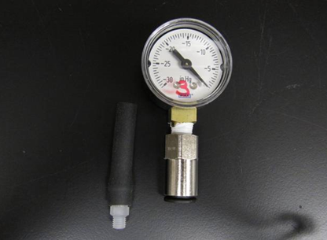
 Waste Bottle Connection
Waste Bottle Connection
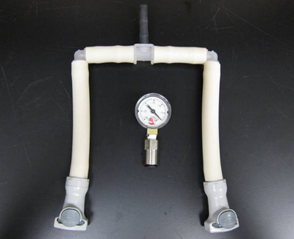
- Vacuum Filter and Configuration 2 Vacuum Pump Housing Connection
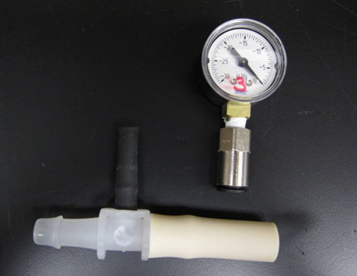
- Configuration 1 Vacuum Pump Connection
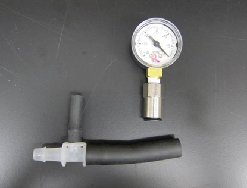
Time Required
- 30 Minutes
Procedure

|
Note—Note this guide provides troubleshooting for Configuration 1 and Configuration 2 A/B vacuum modules. |
|
|
COMPLETE THE ENTIRE GUIDE BEFORE CONCLUDING YOUR INVESTIGATION SINCE LOW VACUUM ISSUES ARE USUALLY AN ACCUMULATION OF MULTIPLE FAILURES ACROSS THE VACUUM SYSTEM. |
Section 1: Initial Full System Inspection
- Using service software, check and record vacuum pressure to determine the magnitude of the issue. (Take multiple readings and use the average to get a more accurate reading.) system target vacuum pressure level is 7 in.Hg (236 mBar) at system idle state and any reading below 6.5in.Hg (220 mbars) means the vacuum system is not functioning as expected.
Note—In rare cases of a system failure due to high vacuum pressure warning, please check for clogged aspirators. - Visually check the vacuum pressure transducer line and make sure there is no buildup forming in the line, if unsure then perform a vacuum manifold pressure sensor cleaning (See Appendix A for a step –by-step procedure).
- Inspect and tighten all vacuum manifold fittings including the vacuum pressure transducer fitting.
- Continue by inspecting the waste line from the manifold to the waste bottle for kinks, length issues, or loose fittings. See image below as an example.
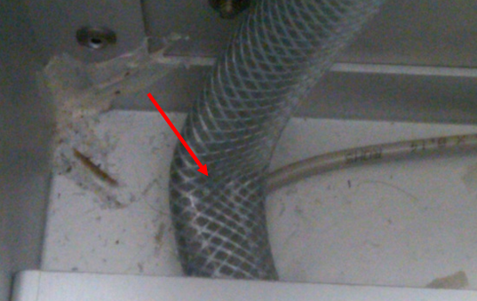
- Inspect the vacuum line from the waste bottle to the coalescence bottle for kinks and adjust as needed.
- Visually inspect the male Quick-Disconnect fittings that connect the waste bottle to the vacuum system for cracks and make sure that the fittings’ O-rings are in place, lubricated, and in good condition. If the fittings are cracked, even minor hairline cracks, replace the fittings. See images below as examples.
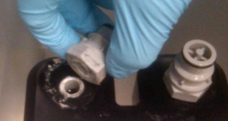
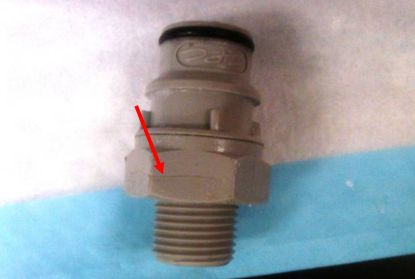
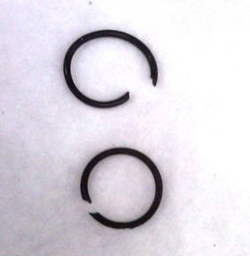
- Check the waste bottle fittings and bottle cap. If found loose, then tighten as needed. Also, check and make sure when you tighten the cap onto the bottle that the bottom of the cap does not bottom-out on the adjacent surface of the bottle.
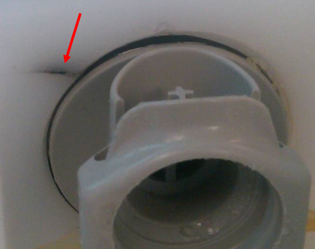
- Check and ensure the soft vacuum filter tubing connectors between the vacuum filter and the coalescence bottle and the vacuum filter and the vacuum pump lines are connected properly.
- Next inspect the vacuum pump lines for kinks and inspect the vacuum pump fittings. Listen to the vacuum pump for any abnormal noises and check for proper wire routing.
- Upon completion of this section, using service software, check and record the vacuum pressure and continue to the next section. (Take multiple readings and use the average to get a more accurate reading)
Note—REGARDLESS OF WHAT THE VACUUM PRESSURE READING IS, YOU MUST COMPLETE SECTION 2 OF THIS PROCEDURE.
Section 2: Sectional Troubleshooting of the Vacuum System
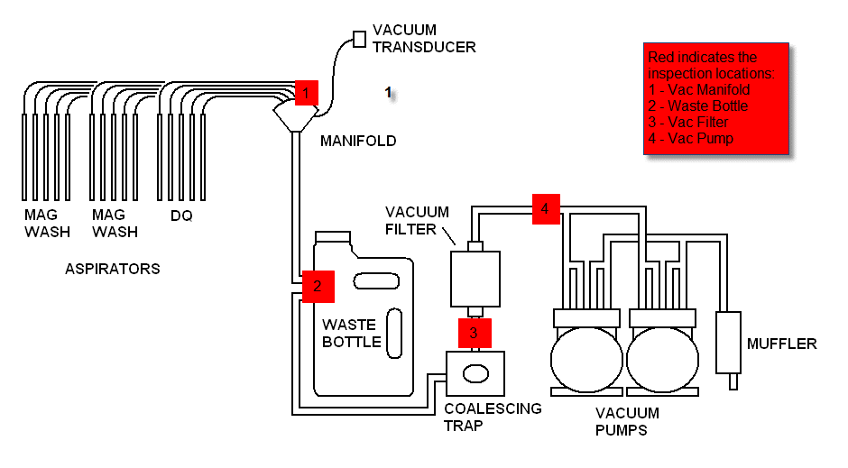
|
|
Note—Use the image above as a reference for the following four steps. |
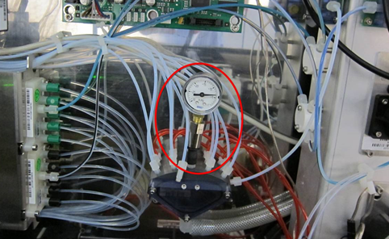
- Vacuum Manifold: Unscrew the middle aspirator fitting from the vacuum manifold and connect the vacuum test tool in its place as shown in the image above. Take a vacuum reading using service software and compare it with the vacuum test tool reading. (Refer to the table below for proper analysis.)
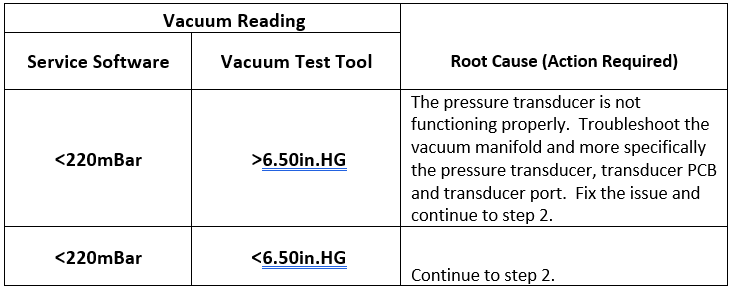
- Waste Bottle: While the vacuum is running, open the waste drawer and listen for air leak noise around the waste bottle and especially by the waste bottle Quick-Disconnect fittings. If no issues are found, then remove the waste bottle and connect the appropriate vacuum test tool from the vacuum test tool kit to the male Quick-Disconnect fittings in the waste drawer to bypass the waste bottle, as shown in the image below. Take a vacuum reading with service software and compare it with the pressure reading at the vacuum test tool. (Refer to the table below for proper analysis.)
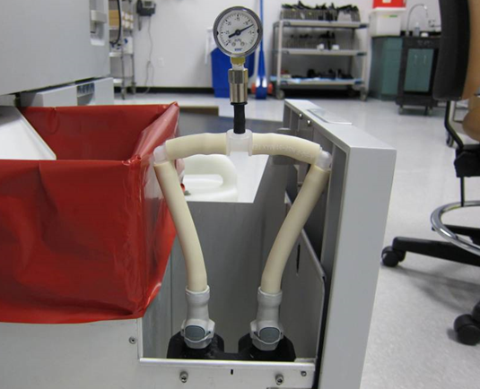
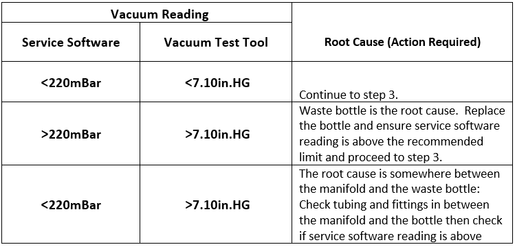
- Vacuum Filter: Connect the appropriate vacuum test tool to the inlet of the vacuum filter, as shown in the image below. Take a vacuum reading using service software and compare with the vacuum pressure reading on the vacuum test tool. (Refer to the table below for proper analysis.)
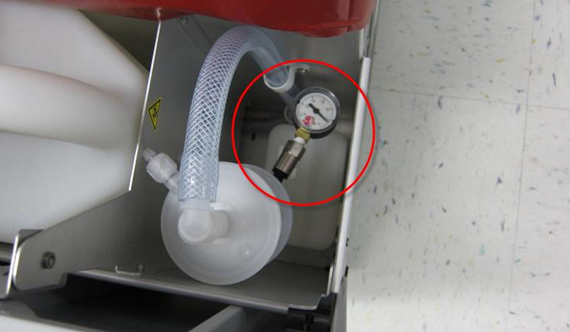
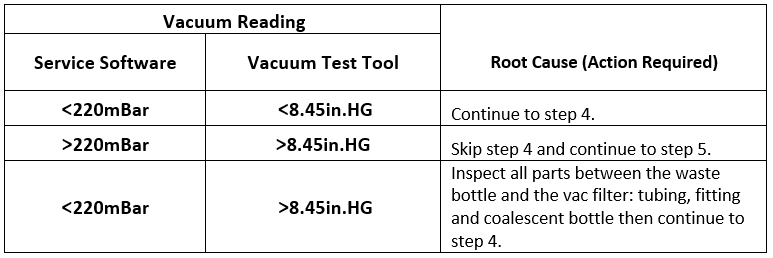
Before proceeding to the next step, bypass the vacuum filter using the vacuum test tool and if the vacuum pressure increases by more than 20mbars using service software, then change the vacuum filter and continue to step 4. (If it is determined that the vacuum filter is clogged, then unscrew the coalescence bottle drainage plug from the side of the drawer, if fluid drains out of the bottle then remove it from the drawer and clean.)
Note—Dark vacuum filter membrane does not necessarily mean that the filter is clogged. - Vacuum Pump: There are two configurations for the vacuum pump:
- With the vacuum housing.
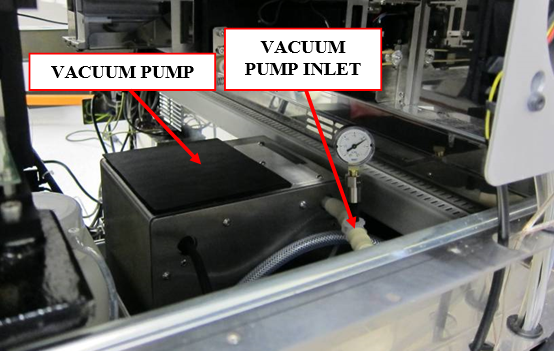
- Without the vacuum housing.
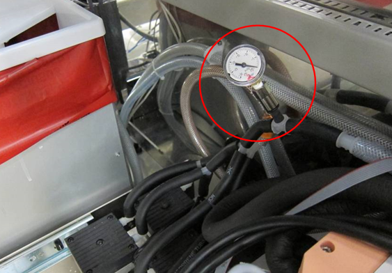
Refer to images above and attach the appropriate tool as shown for each configuration. Take a vacuum reading using service software and compare with the vacuum pressure reading on the vacuum test tool.
(Refer to the table below for proper analysis.)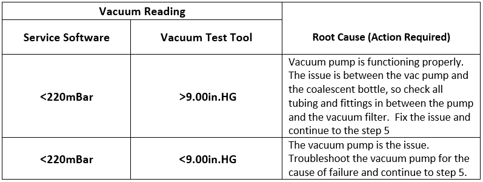
- Upon resolving the low vacuum issue, return the system to its original configuration and run a MagWash OQ.
 button at the top of the page to send feedback, comments, or change requests.
button at the top of the page to send feedback, comments, or change requests.